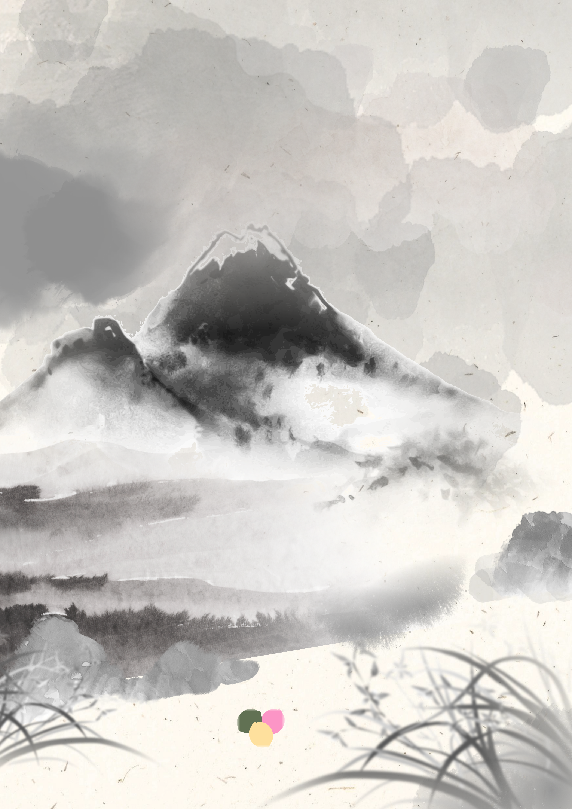
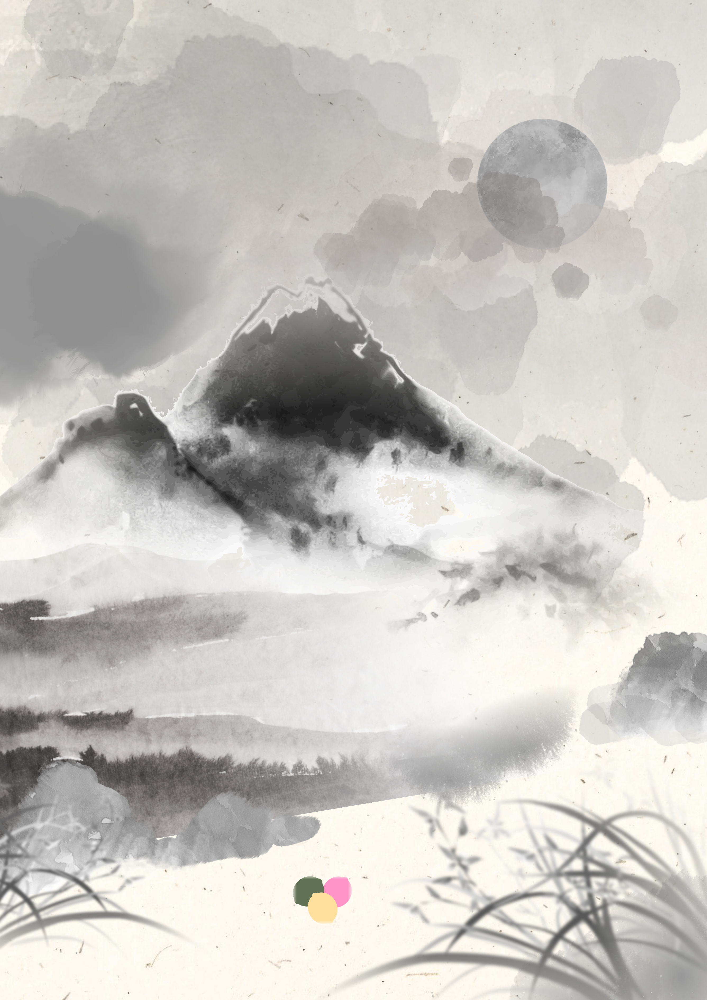
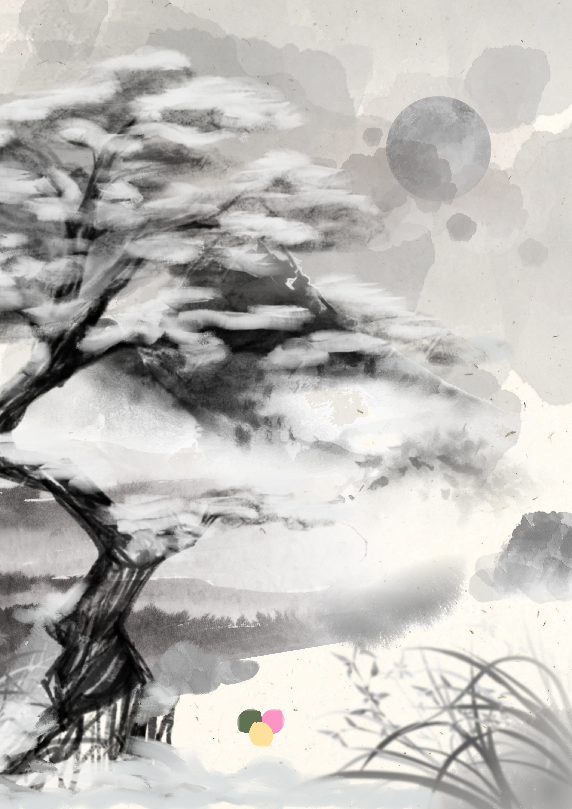
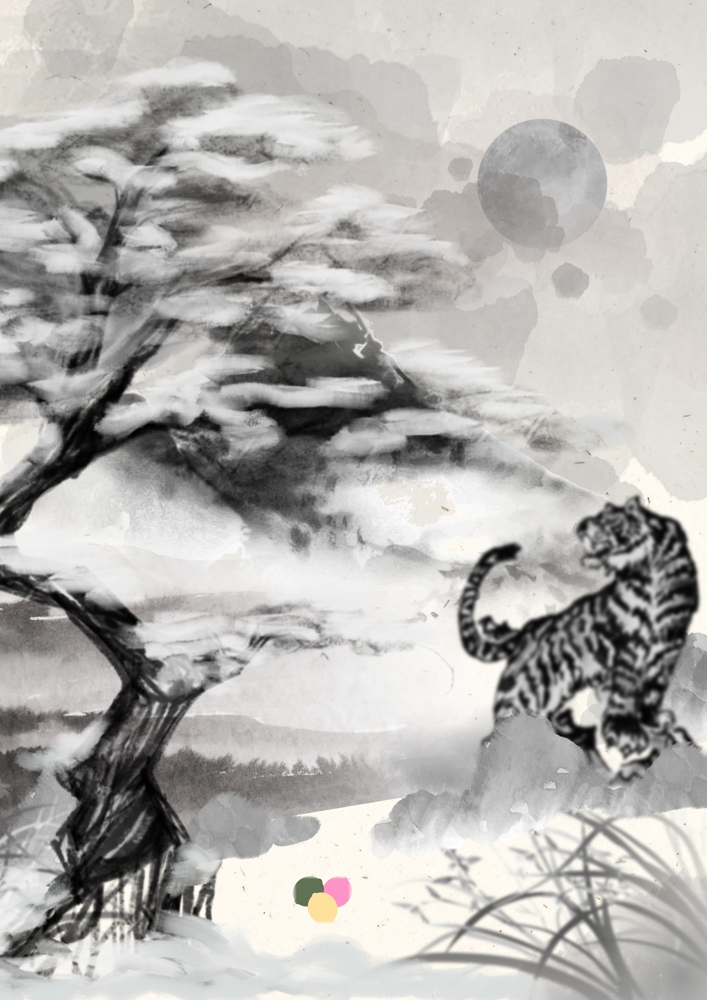
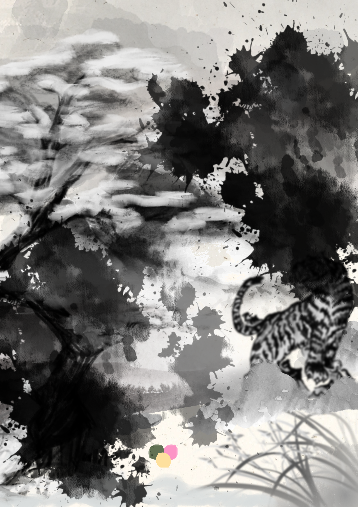

겹쳐진 기억
네 개의 기억 중 하나를 선택하세요.
한 번 선택한 기억은
다시 변경할 수 없습니다.
다시 변경할 수 없습니다.
겹쳐진 기억
두 그림 사이의 차이를 찾아보세요.

그림에서 달라진 것은 무엇일까?
숨겨진 빛
빛을 움직여 그림 속 무언가를 찾아보세요.

손전등을 움직여 숨겨진 글자를 찾아보세요.
이곳에서 발견한 것은?
낯선 발자국
남겨진 흔적을 따라가 보세요.

호랑이 발치에서 시작된 흔적이 보인다.
기억 속의 마을
짙게 번진 먹물을 문질러 씻어내세요.

번진 먹물이 마을의 마지막 기억을 가리고 있다.
탐사를 종료합니다.